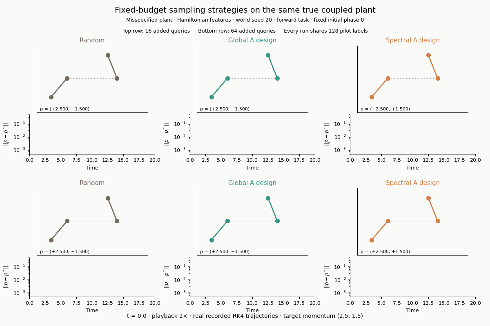
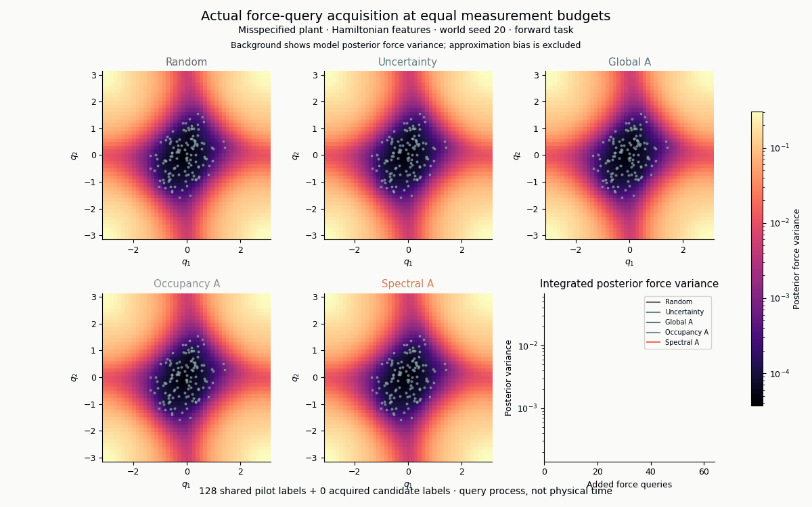
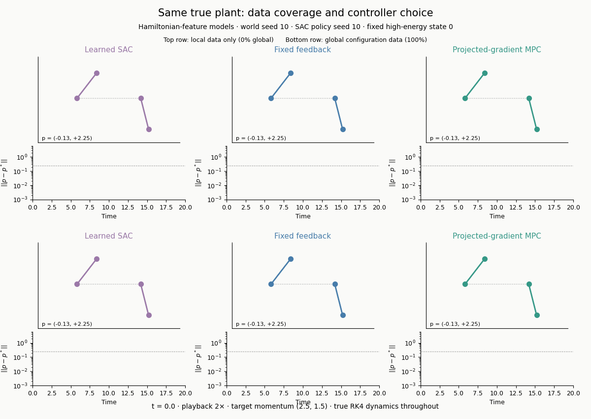
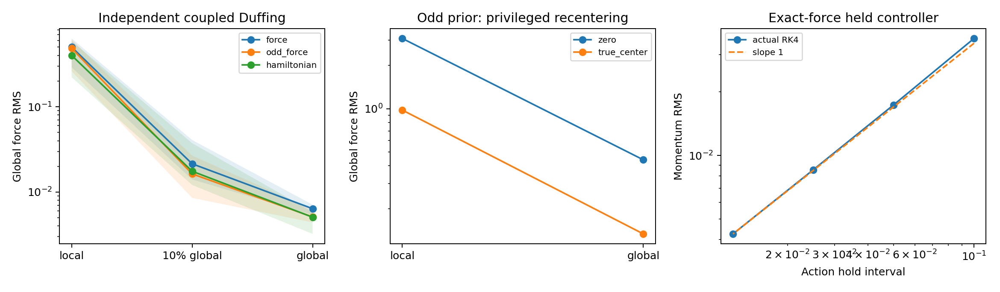

JIAJUN FU · DUKE KUNSHAN UNIVERSITY · OCTOBER 2026
When does Hamiltonian structure help control?
A study separating physical structure from data coverage, coordinate assumptions and policy optimization. Every animation below uses actual numerical outputs.
162
Validation-selected models
Coverage and coordinate benchmark
660
Unique acquisition models
Pilot aliases are counted separately
4 / 4
Primary candidate cells failed
Predeclared stop decision retained
q̇ = p ṗ = −∇V(q) + u H(q,p) = ½‖p‖² + V(q)
Actual dynamics and acquisition

A fixed held-out phase of the same true coupled plant, with models learned at 16 or 64 additional labels. Parallel rods illustrate angular coordinates and coupling. Playback runs at twice physical speed; the aggregate results below include all test phases.

Frame index counts actual queries, not physical time. Grey points are the local pilot; selected queries expand global coverage. The common-scale posterior variance heatmap excludes approximation bias.

Same mechanics, different data coverage and controller families. Known mass and torque ports are supplied to every force model.
The candidate did not pass
A task-weighted covariance criterion reduced its own uncertainty objective but failed to improve practical tracking against the strongest tested baseline. No rescue variants are included.
Plant / target
Best baseline RMS
Candidate RMS
Degradation
Canonical / forward
0.016906
0.017547
3.79%
Canonical / swapped
0.015687
0.016543
5.46%
Misspecified / forward
0.034552
0.039674
14.83%
Misspecified / swapped
0.057841
0.059162
2.28%
The research contribution is a verified comparative study and original experimental record. Weighted optimal design, Hamiltonian features and invariant-design mathematics are established tools. This release makes no claim of a new successful general learning algorithm.
Final independent checks

Left: coupled Duffing force estimation, five seeds, fixed sample count; shaded ranges are minima/maxima, not confidence intervals. Middle: odd prior recentered at the privileged true symmetry origin. Right: exact-force unsaturated controller error shrinks approximately linearly with action-hold interval.
What the evidence supports
Coverage
Broad configurations reduce extrapolation error more than the tested between-model gaps.
Coordinate priors
Incorrectly centered oddness imposes an avoidable approximation floor.
Optimization
Better fitted forces do not automatically produce better finite-budget SAC policies.
Synthetic systems · known unit mass and input ports · free generative force queries · scoped originality review · no remote publication or peer-review claim. This offline page contains no external scripts or requests.